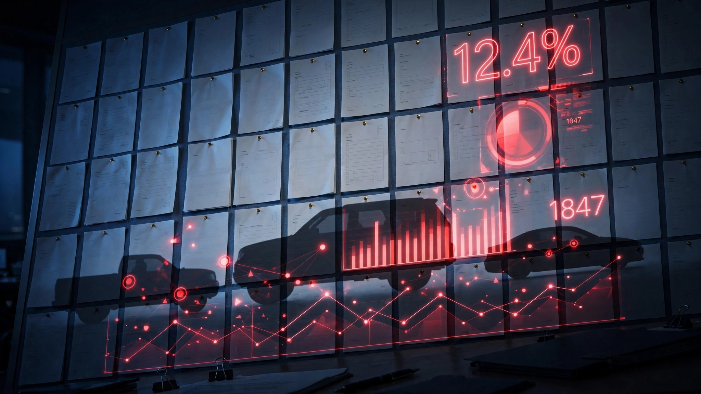

2.6 Million Vehicles Recalled in Five Weeks. Their FARS Body Count: 15,197.

I ran every major recall from early July through this first week of August against a decade of NHTSA Fatality Analysis Reporting System data, because recall notices describe defects in measured bureaucratic prose but never disclose how many people the affected models have already killed. The aggregate across five recalls covering approximately 2.6 million vehicles: 15,197 FARS fatalities in the 2014-2023 recording period.
Ram 1500 seatbelt anchor (1,271,294 trucks): Second-row buckle anchors in model years 2019 through 2026 may not be bolted to the body structure, meaning a restraint system engineered to keep passengers alive in a crash could be attached to nothing structural at all. FARS ledger: 714 deaths at 0.13 per 100 million VMT for the Ram 1500 nameplate; include its older Dodge-badged predecessor and the combined Ram truck count reaches 5,121.[1]
Jeep Wrangler and Gladiator fire (1,076,999 vehicles): Power steering pump wiring overheats and ignites the vehicle while parked with the ignition off, producing 51 confirmed fires before Stellantis acted. FARS ledger: 1,842 deaths, 0.84 rate, 1.75-million-unit fleet. NHTSA advised owners to park outside and away from structures until the wiring is replaced, an instruction that reframes the concept of "vehicle at rest" when the vehicle can spontaneously combust.[2]
Ford Focus, Fiesta, and EcoSport timing belt (135,000 vehicles): NHTSA upgraded its investigation on August 3, declaring these discontinued 1.0-liter EcoBoost models an "unreasonable risk to motor vehicle safety" because the timing belt degrades, clogs the oil pump, and kills the engine at highway speed. Failure clusters at 70,000 miles; Ford's recommended belt replacement interval is 150,000 miles; 98 percent of 355 reported incidents occurred before the scheduled service. FARS ledger: the Focus alone carries 3,046 deaths at a 2.52 rate, the highest of any model recalled this cycle. Ford discontinued all three vehicles and provided no comment.[3]
Ford F-250 and F-150 rearview camera (47,587 trucks): A SYNC software error overlays the infotainment home screen on the backup camera image when the truck is shifted into reverse. NHTSA mandated backup cameras in 2018 specifically to prevent backover fatalities, and the F-150 and F-250 carry a combined 10,103 FARS deaths, collectively the deadliest nameplate in the American fleet. The camera that exists to save lives now intermittently displays a menu instead of what is behind the vehicle.[4]
Subaru Forester moonroof (69,663 vehicles): Primer adhesion failure could detach the moonroof glass while driving. Three detachments, zero crashes, zero injuries. Subaru recalled every unit. FARS ledger: 396 deaths at 0.26 rate, among the lowest in the SUV class. Statistically, the outlier here is not the defect rate but the response time: Subaru initiated the recall before a single person was hurt, while Ford's 1.0-liter EcoBoost investigation required an NHTSA enforcement action years after the first complaints.[5]
What you should do: Enter your VIN at nhtsa.gov/recalls regardless of what you drive. If you own a 2019-2026 Ram 1500, schedule the seatbelt anchor inspection before putting anyone in the second row. If you own a 2021-2025 Wrangler or Gladiator, park it outside until the steering pump wiring is inspected and replaced. If you drive a Ford Focus, Fiesta, or EcoSport with the 1.0-liter engine and are anywhere near 70,000 miles, treat the timing belt as a component that has already exceeded its functional lifespan regardless of what the owner's manual recommends.
Sources & References
- USA Today, “Over 1 million Rams are being recalled,” August 4, 2026. usatoday.com
- Reuters, “Stellantis recalls over 1 million US vehicles over power steering defect,” June 9, 2026. reuters.com
- Reuters, “US says some older Ford cars, SUVs pose unreasonable safety risks,” August 3, 2026. reuters.com
- Courier-Journal, “Ford recalls nearly 48,000 trucks for camera glitch,” August 4, 2026. courier-journal.com
- USA Today, “Subaru recalls nearly 70K vehicles,” June 4, 2026. usatoday.com
- NHTSA, Fatality Analysis Reporting System (FARS), 2014–2023. nhtsa.gov
- NHTSA Recalls Database. nhtsa.gov/recalls